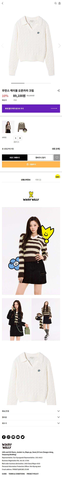

wackywilly
- wackywilly 쇼핑몰 사이트
- pc / 모바일 반응형 구축
- Gulp 환경
- HTML / SCSS / JavaScript
- GitHub 버전 관리 및 배포 구조
- 기여도 50%
- 로그인 / 회원가입 /상품리스트 / 상품상세(단품/셋트/품절/추가구성) / 마이페이지 (주문정보 / 혜택정보 / 나의정보 / 위시리스트) / 장바구니 (회원 / 비회원) / 매장안내 / 약관 및 개인정보 / 메일 템플릿 등등 총 대략 52page
-
상품상세 (단품)


-
상품상세 (셋트)


-
마이페이지


사용자 중심의 인터페이스, 반응형 퍼블리싱, 그리고 유지 보수를 고려한 구조화된 코드 설계를 목표로 했습니다.
작업 방식
- SCSS 변수·믹스인 사용으로 테마 색상 및 요소 스타일 일원화
- 공통 레이아웃(header, footer, product-list, button 등) 모듈화
- 코드 유지 보수성을 높이기 위해 폴더 구조 체계화